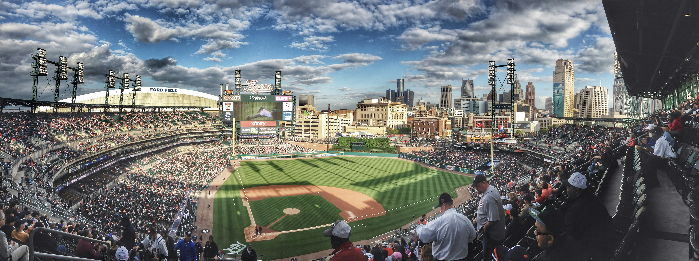

Hello! My name is Lukas Curtil and I am currently studying Information Science and Technology at Michigan State University. I am a third year student here and am originally from Novi, which is only about an hour South East of MSU. I was actually an exploratory major when I first arrived at the University and then later decided to pursue Information Science. I currently live in an apartment just off of the North end of campus on Beal street, I live here with three of my friends and it's our first year livng together. I have two siblings, one older brother, and a younger sister. My brother is finishing up his degreen in Zoology at MSU and my sister is a senior in high school with hopes of coming to MSU as well.
I met two of those friends back in high school and the other during my second year here while in the MSU marching band. I have been in the drumline for three years now as a snare drummer and it is something I really enjoy doing. I have played the drums for a lot of my life and I still enjoy it and look forward to being able to do it every fall with my friends. I also enjoy playing video games like MLB The Show, watching sports like football and basketball, and just hanging out with my friends in general. In my life, I have been to France a handful of times since my family is originally from there and I have a lot of family still living there. Unfortunately, it has become way too expensive to go back frequently and I actually haven't been back since 2019.
